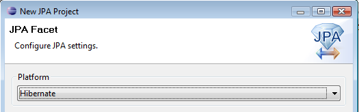
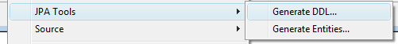
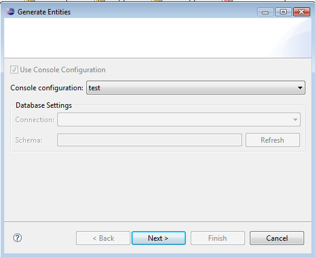

|
We added support for Hibernate to the Dali plugins provided by Eclipse WTP.
This makes Hibernate available as a target platform for JPA projects.

Currently the Dali support just entails enabling "Generate DDL"
and "Generate entities" from the JPA menu.

Going forward more features will be added to support Hibernate
specific JPA features in Dali.

Note: Currently the JPA wizards requires you to have a Hibernate Console configuration already configured. That will not be required in an upcoming release.
|